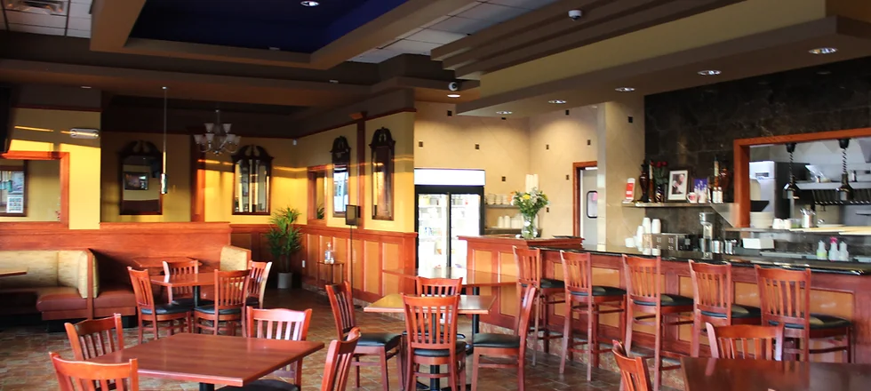
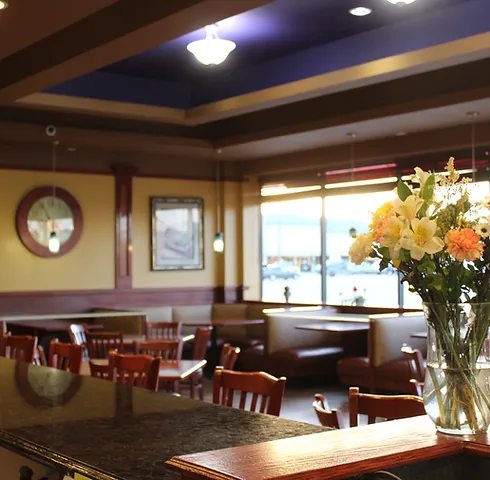
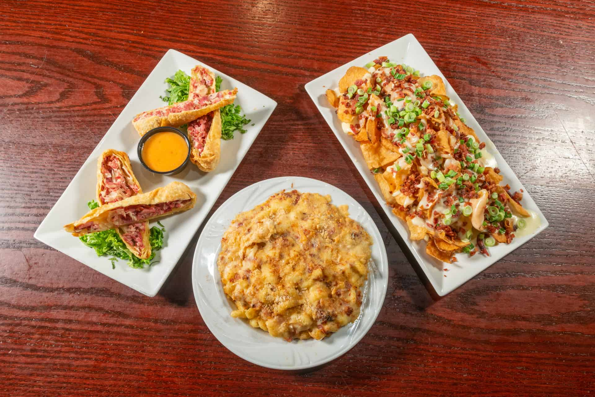
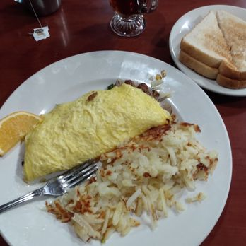

About Nick's
Source: https://static.wixstatic.com Source: https://static.wixstatic.com Source: usatourism.com Source: yelpcdn.com
{kind=link}
{kind=link}
{kind=link}
{kind=link}
4.6 Stars
A family owned restaurant, Family Friendly. Nick's has been in business for 10 years. They use fresh ingrediants for their dishes, and the reviews are overwhelmingly positive.
Includes kids' menu, doesn't do reservations. They offer deliveries.
Menu: nicksfourroses.com/menus
Hours:
Monday - Saturday:
7:00 am - 8:00 pm
Sunday:
7:00 am - 3:00 pm
Reviews
"After seeing the reviews, I figured it'll be a nice ride to go check it out... Def not disappointed. The menu has a great variety for everyone and my breakfast was amazing. The service is second to none, as the staff was very friendly and made you feel welcome. I think I found a new breakfast spot for when I want to get out for a bit. 5/15
Parking: More than enough spots close to the entrance
Kid-friendliness: Friendly for all ages"
- Eric Adams, 6 months ago, 5 stars
"A weekend away and we decided to try a couple of local places for breakfast.
This was one amazing breakfast for only $25. It could easily have fed four people and was delicious. You have to try the Polish Skillet!
Holly, the server, was also great.
Parking: It's in a Plaza so plenty of Parking"
- Darren Trippetts, a month ago, 5 stars
Contact
| Website: | nicksfourroses.com |
|---|---|
| Address: | 1329 24th St, Port Huron MI 48079, USA |
| Phone: | (810) 966-3900 |